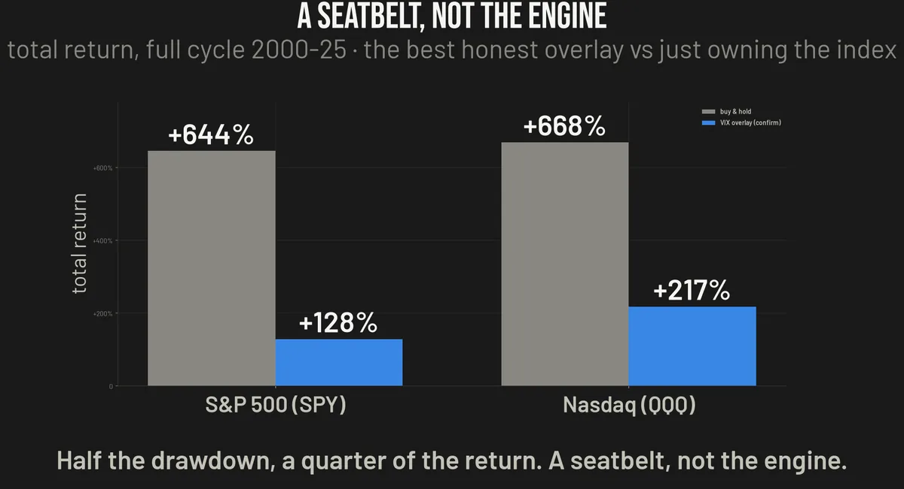
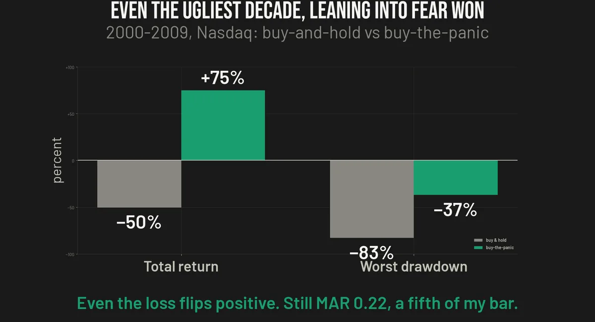

Does Buying When the VIX Tops 35 Work? 25 Years Tested
HALF-TRUE.
A viral cheat sheet said to buy when the VIX tops 35 and sell when it drops under 15. Selling under 15 is a base-rate fallacy; buying the panic is a real edge, but a modest one. The best version, which waits for price to close back above its 200-day after a spike, returned +128% on SPY and +217% on QQQ from 2000 to 2025, against +644% and +668% for buy-and-hold. It roughly halved the drawdown (-28% and -33% versus -55% and -83%), but its best full-cycle MAR of 0.14 never cleared the 0.5 bar. On small caps (IWM) the protection vanished, with a -53.7% drawdown versus -58.6% for buy-and-hold.


The receipts
The code and result files behind every number on this page.
Browse the receipts for this episodeRelated autopsies
- Does GEX (Gamma Exposure) Predict the Market? The Viral Claim, TestedVerdict: HALF-REAL.
- Does the Golden Cross Work? 100 Years of DataVerdict: JUST A SEATBELT.
- Does “Sell in May and Go Away” Work? 100 Years of DataVerdict: STAY IN MAY.